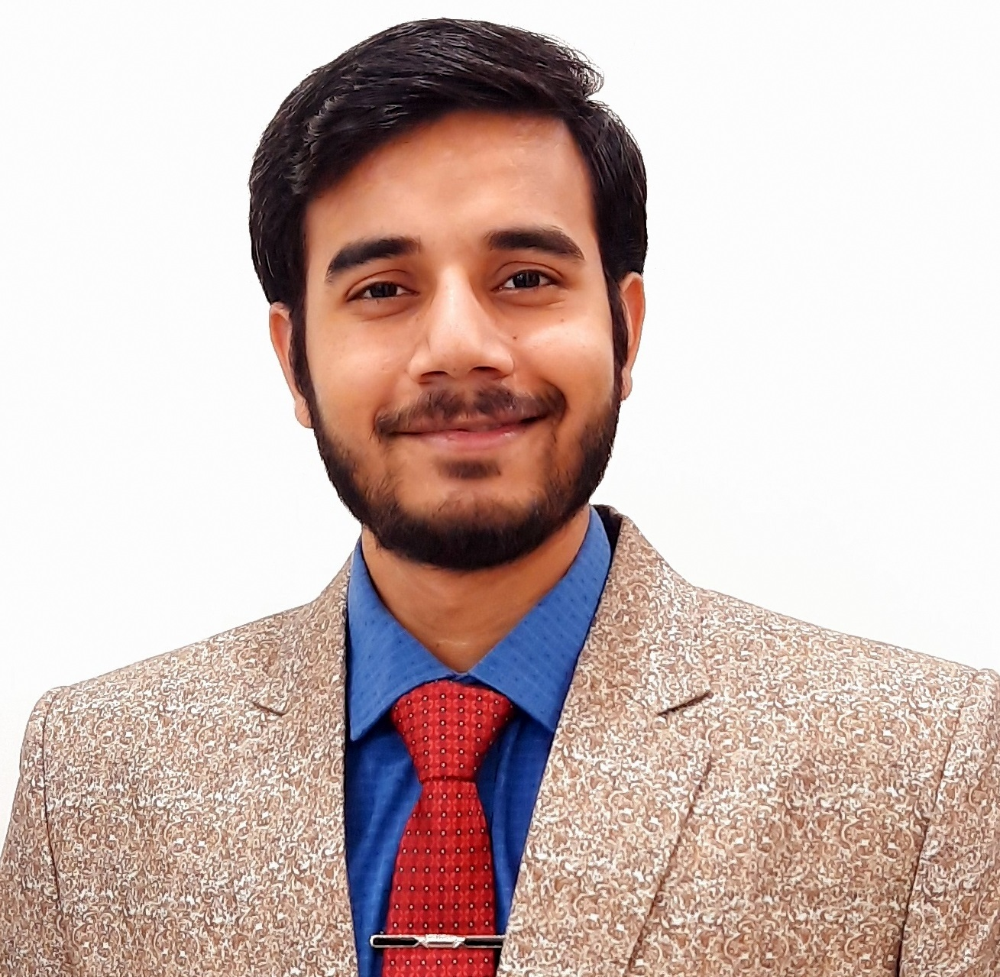

ADAS systems & software
AEB, ACC and APA feature architecture across distributed ECUs and high-performance compute.
I turn complex safety requirements into dependable vehicle software. A cross-industry systems engineer spanning automotive, healthcare and rail—now building ADAS architectures and AI-powered engineering workflows at Jaguar Land Rover.

I work across the full engineering chain—from feature intent and architecture to software requirements, integration, verification and release readiness.
AEB, ACC and APA feature architecture across distributed ECUs and high-performance compute.
ISO 26262 ASIL B, ASPICE SWE.2, end-to-end traceability, verification strategy and audit readiness.
Practical GenAI and Python tools for innovation assessment, requirement authoring and validation.
Designed for dependable delivery: latency-aware paths, middleware abstraction and E2E protection using AUTOSAR Profile 6 / OEM-specific mechanisms.
A selection of architecture, automation and advanced safety concepts developed around real engineering problems.
Architected AEB, ACC and APA from functional decomposition through static and dynamic software views, communication interfaces, decision logic and verification.
Assesses novelty, technical feasibility and integration against vehicle architecture, functional safety and patent landscapes.
AI-assisted requirement authoring, originality checks, white-paper drafting and edge-case scenario generation.
Lead architecture, requirements, functional-safety compliance, release governance and cross-team delivery for advanced driver-assistance features. Present readiness and KPIs to India–UK leadership and develop advanced safety concepts and AI tooling.
Defined architectures and interfaces connecting infusion pumps, EMRs and gateway applications, while supporting cybersecurity, design control, verification and traceability in regulated medical systems.
Owned functional and non-functional specifications, requirements baselines, change control, customer technical topics, risk analysis and reuse strategy.
Designed and validated passenger communication systems for major metro programs across India, Singapore and Australia. Led architecture, integration, customer training and project execution from specification to revenue service.
I’m strongest where disciplines intersect: architecture and implementation, safety and speed, rigor and innovation.
MBSE · SysML · MSOSA · DOORS · TRM · JIRA · functional decomposition · interface specifications · V-model · Agile / Scrum
Classic & Adaptive AUTOSAR · SOME/IP · CAN · IPC · QNX · C++14 · MATLAB Simulink · Git · CI/CD
ISO 26262 · ASPICE · FMEA · 8D · QRQC · RCA · Ethernet · TCP/IP · WPA2/WPA3 · cybersecurity
GenAI engineering tools · Python automation · product ownership · PI planning · technical training · cross-functional leadership
BITS Pilani · WILP
2026–2028 · Ongoing
National Institute of Technology Srinagar · CGPA 8.039
2012–2016
IGNOU · CGPA 8.3
2019–2021
Baxter · Novum SYR interoperability testing · Q4 2023
Alstom · March & December 2021
KPMG certification
All India Rank 1861 · 2016
Open to senior engineering, architecture, functional-safety and AI-enabled product opportunities where complex systems need clear thinking.